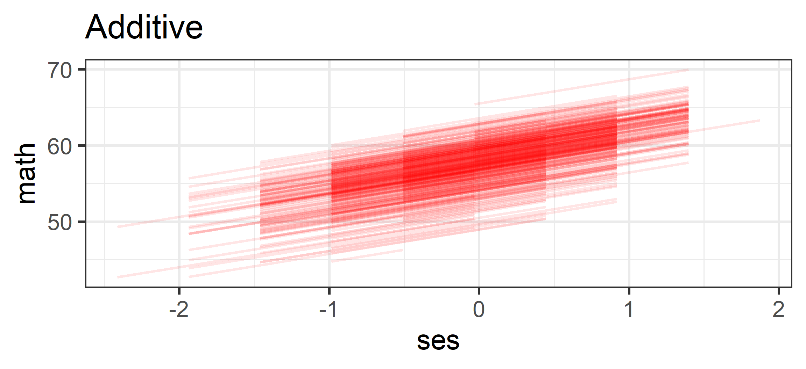
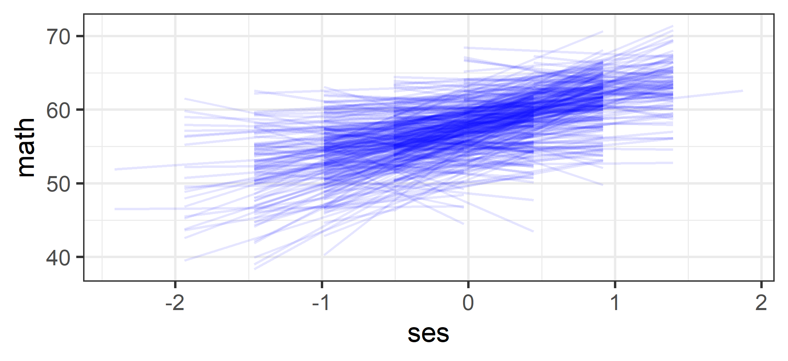

library(easystats)
library(ggplot2)
library(sandwich)
# We will use the same dataset throughout
# heck2011.csv: Students (L1) nested in Schools (L2)
dat <- read.csv("../../data/heck2011.csv")
theme_set(theme_bw(base_size = 30))Multilevel Modeling
Approaches to Clustered Data
Spring 2026 | CLAS | PSYC 894
Jeffrey M. Girard | Lecture 03b

Roadmap
Complete Pooling
No Pooling
Partial Pooling
Setup
Complete Pooling
Overview of Complete Pooling
- Analyze all the clusters together in a single-level model
- Correct for violated assumption using cluster-robust SEs
- Best when clustering is a nuisance rather than an interest
- Effects are averaged across clusters and all information is shared
- ✅ Accounts for non-independence (and heteroskedasticity)
- ✅ Relatively easy to implement and efficient to estimate
- ❌ Cannot estimate effect heterogeneity (there’s just one)
- ❌ Requires around 40+ clusters for accurate estimation
OLS Residual Covariance
- When we assume that the residuals are IID, we assume they are…
- Independent: all residuals have \(0\) covariance (and correlation)
- Identically Distributed: all residuals have the same \(\sigma^2\) variance
- This implies that the residual covariance matrix is a “scalar matrix”
- For example, with six observations, we assume the matrix looks like this:
\[ \Omega_{ols} = \begin{bmatrix} \sigma^2 & 0 & 0 & 0 & 0 & 0 \\ 0 & \sigma^2 & 0 & 0 & 0 & 0 \\ 0 & 0 & \sigma^2 & 0 & 0 & 0 \\ 0 & 0 & 0 & \sigma^2 & 0 & 0 \\ 0 & 0 & 0 & 0 & \sigma^2 & 0 \\ 0 & 0 & 0 & 0 & 0 & \sigma^2 \end{bmatrix} \]
Cluster-Robust Residual Covariance
- If we know the cluster structure of our data, we can instead assume…
- Residuals have non-zero covariance within the same cluster
- All residuals in a cluster have the same \(\sigma_j^2\) variance
- This implies that the residual covariance matrix is a “block diagonal matrix”
- For example, if our six observations are clustered in two groups ({1,2,3} & {4,5,6}):
\[ \Omega_{cl} = \begin{bmatrix} \color{blue}{\sigma^2_1} & \color{blue}{\sigma^2_{1}} & \color{blue}{\sigma^2_{1}} & 0 & 0 & 0 \\ \color{blue}{\sigma^2_{1}} & \color{blue}{\sigma^2_1} & \color{blue}{\sigma^2_{1}} & 0 & 0 & 0 \\ \color{blue}{\sigma^2_{1}} & \color{blue}{\sigma^2_{1}} & \color{blue}{\sigma^2_1} & 0 & 0 & 0 \\ 0 & 0 & 0 & \color{green}{\sigma^2_2} & \color{green}{\sigma^2_{2}} & \color{green}{\sigma^2_{2}} \\ 0 & 0 & 0 & \color{green}{\sigma^2_{2}} & \color{green}{\sigma^2_2} & \color{green}{\sigma^2_{2}} \\ 0 & 0 & 0 & \color{green}{\sigma^2_{2}} & \color{green}{\sigma^2_{2}} & \color{green}{\sigma^2_2} \end{bmatrix} \]
The “Sandwich” Estimator
- How do we get standard errors from that block matrix?
- We use a Sandwich Estimator: Bread \(\times\) Meat \(\times\) Bread
\[ Var(\beta) = \underbrace{(X'X)^{-1}}_{\text{Bread}} \overbrace{X' \Omega X}^{\text{Meat}} \underbrace{(X'X)^{-1}}_{\text{Bread}} \]
- The Bread: Represents the standard estimation precision (sample size, etc.)
- The Meat: Represents the “clumpiness” (variance) of the residuals
- If there is no clustering, the meat cancels out (standard OLS)
- If there is clustering, the meat “inflates” the SEs appropriately
Example Dataset
'data.frame': 6871 obs. of 8 variables:
$ school : int 1 1 1 1 1 1 1 1 1 1 ...
$ student: int 6701 6702 6703 6704 6705 6706 6707 6708 6709 6710 ...
$ female : int 1 1 1 0 0 0 0 1 0 1 ...
$ ses : num 0.586 0.304 -0.544 -0.848 0.001 -0.106 -0.33 -0.891 0.207 -0.341 ...
$ math : num 47.1 63.6 57.7 53.9 58 ...
$ puniv : num 0.0833 0.0833 0.0833 0.0833 0.0833 ...
$ public : int 0 0 0 0 0 0 0 0 0 0 ...
$ gender : Factor w/ 2 levels "M","F": 2 2 2 1 1 1 1 2 1 2 ...math(L1): Student math score (Outcome)ses(L1): Student socioeconomic statusgender(L1): Student gender (0=Male, 1=Female)school(L2): School ID (Cluster)
Implementation
Parameter | Coefficient | SE | 95% CI | t(6868) | p
--------------------------------------------------------------------
(Intercept) | 58.13 | 0.14 | [57.86, 58.41] | 418.09 | < .001
ses | 4.23 | 0.13 | [ 3.98, 4.47] | 33.68 | < .001
gender [F] | -1.06 | 0.20 | [-1.45, -0.68] | -5.42 | < .001Parameter | Coefficient | SE | 95% CI | t(6868) | p
--------------------------------------------------------------------
(Intercept) | 58.13 | 0.17 | [57.81, 58.46] | 351.72 | < .001
ses | 4.23 | 0.15 | [ 3.93, 4.52] | 28.27 | < .001
gender [F] | -1.06 | 0.21 | [-1.48, -0.65] | -5.04 | < .001Note that the SEs increased from 0.20 to 0.21 and 0.13 to 0.15.
Visualization

No Pooling
Overview of No Pooling
- Add cluster dummy codes and interactions (“fixed effect method”)
- Or split the data and run separate models (“idiographic method”)
- Best when clustering is a nuisance rather than an interest
- Effects are cluster-specific and no information is shared
- ✅ Completely removes contextual variance of clustering
- ✅ Does not require a minimum number of clusters
- ❌ Cannot generalize to the broader population of clusters
- ❌ Cannot explain contextual variance because it is removed
Approach A: Controlling
The Logic: “I know schools have different average scores, but I assume SES works the same way everywhere.”
- Model:
math ~ ses + school - Result: Unique intercepts, but a shared slope.
- Visual: Parallel Lines
- Use When: Clustering is just a “nuisance” (mean differences) you want to remove to see the “true” main effect.
Implementing Approach A
We include school (Factor) as a predictor to estimate a unique intercept for every single school.
Estimated Marginal Effects
Slope | SE | 95% CI | t(6451) | p
----------------------------------------------
3.19 | 0.16 | [2.88, 3.50] | 20.22 | < .001
Marginal effects estimated for ses
Type of slope was dY/dXVisualizing Approach A
Approach B: Interacting
The Logic: “I suspect the school context actually changes how important SES is for achievement.”
- Model:
math ~ ses * school - Result: Unique intercepts and unique slopes.
- Visual: Crossing Lines
- Use When: You care about Effect Heterogeneity (e.g., “Is the SES gap larger in public vs. private schools?”).
Implementing Approach B
Estimated Marginal Effects
school | Slope | SE | 95% CI | t(6033) | p
----------------------------------------------------------------
1 | 2.05 | 4.69 | [ -7.14, 11.23] | 0.44 | 0.662
2 | 5.40 | 6.05 | [ -6.46, 17.27] | 0.89 | 0.372
3 | 1.63 | 3.13 | [ -4.51, 7.78] | 0.52 | 0.602
4 | 3.03 | 4.94 | [ -6.66, 12.71] | 0.61 | 0.540
5 | 7.64 | 3.90 | [ -0.01, 15.28] | 1.96 | 0.050
6 | -0.80 | 2.73 | [ -6.15, 4.55] | -0.29 | 0.770
7 | 4.60 | 2.43 | [ -0.16, 9.37] | 1.89 | 0.058
8 | 10.04 | 3.20 | [ 3.77, 16.31] | 3.14 | 0.002
9 | 4.66 | 3.17 | [ -1.55, 10.86] | 1.47 | 0.142
10 | 5.18 | 4.31 | [ -3.26, 13.63] | 1.20 | 0.229
11 | 5.85 | 2.74 | [ 0.48, 11.23] | 2.13 | 0.033
12 | 8.17 | 3.81 | [ 0.71, 15.62] | 2.15 | 0.032
13 | 1.29 | 1.93 | [ -2.50, 5.08] | 0.67 | 0.506
14 | 5.39 | 3.42 | [ -1.32, 12.10] | 1.58 | 0.115
15 | -0.57 | 2.77 | [ -5.99, 4.86] | -0.21 | 0.837
16 | -1.83 | 4.14 | [ -9.95, 6.29] | -0.44 | 0.658
17 | 7.22 | 2.70 | [ 1.92, 12.52] | 2.67 | 0.008
18 | 3.86 | 3.76 | [ -3.51, 11.22] | 1.03 | 0.305
19 | -3.21 | 3.11 | [ -9.31, 2.90] | -1.03 | 0.304
20 | -0.64 | 3.78 | [ -8.05, 6.76] | -0.17 | 0.865
21 | 11.19 | 3.44 | [ 4.45, 17.94] | 3.25 | 0.001
22 | 2.42 | 3.29 | [ -4.03, 8.87] | 0.74 | 0.462
23 | 0.69 | 3.90 | [ -6.96, 8.34] | 0.18 | 0.859
24 | 3.24 | 2.84 | [ -2.32, 8.80] | 1.14 | 0.254
25 | 7.11 | 3.45 | [ 0.35, 13.88] | 2.06 | 0.039
26 | 0.83 | 3.69 | [ -6.41, 8.07] | 0.22 | 0.822
27 | -1.52 | 3.41 | [ -8.21, 5.17] | -0.44 | 0.656
28 | -2.20 | 3.24 | [ -8.55, 4.14] | -0.68 | 0.496
29 | 6.02 | 3.62 | [ -1.07, 13.11] | 1.66 | 0.096
30 | 9.31 | 3.14 | [ 3.16, 15.46] | 2.97 | 0.003
31 | 3.93 | 2.20 | [ -0.38, 8.23] | 1.79 | 0.074
32 | 0.00 | 3.32 | [ -6.50, 6.50] | 0.00 | > .999
33 | 2.25 | 2.89 | [ -3.41, 7.92] | 0.78 | 0.435
34 | 5.31 | 4.37 | [ -3.27, 13.88] | 1.21 | 0.225
35 | 1.22 | 3.67 | [ -5.98, 8.41] | 0.33 | 0.740
36 | 8.49 | 3.79 | [ 1.06, 15.91] | 2.24 | 0.025
37 | 0.99 | 3.31 | [ -5.51, 7.49] | 0.30 | 0.765
38 | -1.64 | 4.28 | [-10.02, 6.74] | -0.38 | 0.701
39 | 0.19 | 2.50 | [ -4.71, 5.10] | 0.08 | 0.938
40 | 1.61 | 2.20 | [ -2.69, 5.92] | 0.73 | 0.462
41 | 6.84 | 2.68 | [ 1.59, 12.10] | 2.55 | 0.011
42 | -5.67e-04 | 5.84 | [-11.46, 11.45] | -9.70e-05 | > .999
43 | 3.53 | 3.91 | [ -4.15, 11.20] | 0.90 | 0.368
44 | 6.95 | 2.69 | [ 1.67, 12.23] | 2.58 | 0.010
45 | 8.06 | 3.17 | [ 1.85, 14.28] | 2.54 | 0.011
46 | 3.22 | 3.97 | [ -4.56, 11.00] | 0.81 | 0.417
47 | 2.74 | 3.60 | [ -4.31, 9.80] | 0.76 | 0.446
48 | -4.12 | 3.75 | [-11.46, 3.22] | -1.10 | 0.272
49 | 6.69 | 2.22 | [ 2.35, 11.03] | 3.02 | 0.003
50 | 15.45 | 5.95 | [ 3.79, 27.12] | 2.60 | 0.009
51 | -3.96 | 6.70 | [-17.10, 9.19] | -0.59 | 0.555
52 | 0.83 | 4.24 | [ -7.49, 9.14] | 0.20 | 0.845
53 | 0.21 | 3.19 | [ -6.04, 6.47] | 0.07 | 0.947
54 | -1.54 | 6.03 | [-13.36, 10.29] | -0.25 | 0.799
55 | 2.51 | 2.89 | [ -3.16, 8.19] | 0.87 | 0.385
56 | -1.55 | 2.28 | [ -6.02, 2.92] | -0.68 | 0.496
57 | 4.55 | 2.56 | [ -0.46, 9.57] | 1.78 | 0.075
58 | 1.39 | 4.55 | [ -7.52, 10.30] | 0.31 | 0.760
59 | -0.44 | 3.29 | [ -6.89, 6.02] | -0.13 | 0.894
60 | -2.44 | 4.14 | [-10.56, 5.68] | -0.59 | 0.555
61 | 0.90 | 3.09 | [ -5.15, 6.96] | 0.29 | 0.770
62 | 3.61 | 4.94 | [ -6.07, 13.29] | 0.73 | 0.465
63 | 1.51 | 2.81 | [ -4.00, 7.03] | 0.54 | 0.590
64 | 10.18 | 3.77 | [ 2.79, 17.58] | 2.70 | 0.007
65 | 2.60 | 3.78 | [ -4.80, 10.00] | 0.69 | 0.490
66 | 6.33 | 1.85 | [ 2.71, 9.96] | 3.43 | < .001
67 | 1.75 | 2.42 | [ -2.99, 6.49] | 0.72 | 0.470
68 | 5.22 | 2.54 | [ 0.24, 10.20] | 2.06 | 0.040
69 | 6.00 | 2.70 | [ 0.72, 11.29] | 2.23 | 0.026
70 | 2.38 | 4.22 | [ -5.89, 10.66] | 0.56 | 0.572
71 | -0.17 | 3.27 | [ -6.59, 6.24] | -0.05 | 0.957
72 | 10.95 | 2.84 | [ 5.38, 16.52] | 3.85 | < .001
73 | 0.86 | 4.53 | [ -8.03, 9.75] | 0.19 | 0.849
74 | -2.18 | 5.40 | [-12.77, 8.41] | -0.40 | 0.686
75 | 5.42 | 3.43 | [ -1.30, 12.14] | 1.58 | 0.114
76 | 5.79 | 3.53 | [ -1.13, 12.71] | 1.64 | 0.101
77 | -2.32 | 4.31 | [-10.77, 6.14] | -0.54 | 0.591
78 | 7.61 | 3.61 | [ 0.54, 14.68] | 2.11 | 0.035
79 | -2.99 | 3.89 | [-10.62, 4.64] | -0.77 | 0.442
80 | 5.55 | 4.80 | [ -3.85, 14.95] | 1.16 | 0.247
81 | 1.30 | 3.07 | [ -4.71, 7.31] | 0.42 | 0.672
82 | 8.06 | 4.37 | [ -0.50, 16.62] | 1.85 | 0.065
83 | 1.78 | 2.26 | [ -2.65, 6.20] | 0.79 | 0.432
84 | 0.59 | 3.86 | [ -6.99, 8.17] | 0.15 | 0.878
85 | 10.06 | 2.51 | [ 5.15, 14.98] | 4.02 | < .001
86 | 5.90 | 3.04 | [ -0.06, 11.87] | 1.94 | 0.052
87 | 0.65 | 2.90 | [ -5.04, 6.35] | 0.23 | 0.822
88 | 2.64 | 2.34 | [ -1.95, 7.23] | 1.13 | 0.260
89 | 3.12 | 2.71 | [ -2.19, 8.44] | 1.15 | 0.250
90 | 0.55 | 3.14 | [ -5.60, 6.70] | 0.18 | 0.860
91 | 2.43 | 2.43 | [ -2.32, 7.19] | 1.00 | 0.316
92 | 8.46 | 5.44 | [ -2.20, 19.12] | 1.56 | 0.120
93 | 3.55 | 2.54 | [ -1.42, 8.53] | 1.40 | 0.161
94 | 0.74 | 2.97 | [ -5.08, 6.56] | 0.25 | 0.804
95 | 2.60 | 2.97 | [ -3.22, 8.42] | 0.88 | 0.381
96 | -1.17 | 6.46 | [-13.84, 11.49] | -0.18 | 0.856
97 | -1.09 | 4.12 | [ -9.18, 6.99] | -0.26 | 0.791
98 | -5.78 | 2.94 | [-11.54, -0.02] | -1.97 | 0.049
99 | -2.31 | 3.84 | [ -9.83, 5.21] | -0.60 | 0.547
100 | 3.87 | 3.22 | [ -2.44, 10.17] | 1.20 | 0.229
101 | 5.06 | 2.99 | [ -0.81, 10.94] | 1.69 | 0.091
102 | 3.48 | 2.31 | [ -1.05, 8.02] | 1.50 | 0.132
103 | -0.85 | 3.84 | [ -8.38, 6.67] | -0.22 | 0.824
104 | 11.17 | 4.00 | [ 3.33, 19.02] | 2.79 | 0.005
105 | 5.83 | 3.31 | [ -0.66, 12.32] | 1.76 | 0.078
106 | -1.26 | 2.84 | [ -6.84, 4.31] | -0.44 | 0.658
107 | 1.65 | 2.93 | [ -4.09, 7.39] | 0.56 | 0.573
108 | -0.44 | 2.77 | [ -5.88, 4.99] | -0.16 | 0.873
109 | -3.07 | 4.15 | [-11.19, 5.06] | -0.74 | 0.460
110 | 2.56 | 2.87 | [ -3.06, 8.19] | 0.89 | 0.372
111 | 2.55 | 3.31 | [ -3.93, 9.03] | 0.77 | 0.440
112 | 1.55 | 2.50 | [ -3.36, 6.46] | 0.62 | 0.536
113 | 2.38 | 2.36 | [ -2.25, 7.01] | 1.01 | 0.314
114 | -1.30 | 3.60 | [ -8.36, 5.77] | -0.36 | 0.719
115 | -1.23 | 7.09 | [-15.12, 12.67] | -0.17 | 0.863
116 | 6.19 | 2.64 | [ 1.02, 11.37] | 2.35 | 0.019
117 | -5.02 | 4.83 | [-14.49, 4.46] | -1.04 | 0.299
118 | 5.22 | 3.53 | [ -1.70, 12.13] | 1.48 | 0.139
119 | 1.07 | 3.34 | [ -5.47, 7.61] | 0.32 | 0.749
120 | 3.41 | 5.03 | [ -6.45, 13.28] | 0.68 | 0.497
121 | 5.35 | 4.84 | [ -4.14, 14.85] | 1.11 | 0.269
122 | 3.22 | 4.80 | [ -6.19, 12.63] | 0.67 | 0.502
123 | 4.66 | 3.71 | [ -2.62, 11.94] | 1.25 | 0.210
124 | 0.19 | 3.02 | [ -5.73, 6.11] | 0.06 | 0.950
125 | 8.33 | 2.69 | [ 3.05, 13.61] | 3.09 | 0.002
126 | -0.40 | 2.97 | [ -6.22, 5.43] | -0.13 | 0.894
127 | -1.74 | 5.64 | [-12.79, 9.31] | -0.31 | 0.757
128 | 0.20 | 3.00 | [ -5.69, 6.09] | 0.07 | 0.947
129 | 7.04 | 3.22 | [ 0.74, 13.35] | 2.19 | 0.029
130 | -2.29 | 3.16 | [ -8.49, 3.90] | -0.73 | 0.468
131 | 0.64 | 3.69 | [ -6.58, 7.87] | 0.17 | 0.862
132 | 7.06 | 2.78 | [ 1.60, 12.52] | 2.54 | 0.011
133 | -0.04 | 4.97 | [ -9.78, 9.70] | -8.19e-03 | 0.993
134 | 9.52 | 2.76 | [ 4.12, 14.93] | 3.46 | < .001
135 | 4.99 | 2.79 | [ -0.48, 10.45] | 1.79 | 0.074
136 | 3.74 | 4.35 | [ -4.79, 12.28] | 0.86 | 0.390
137 | 2.99 | 6.31 | [ -9.39, 15.36] | 0.47 | 0.636
138 | 2.33 | 3.40 | [ -4.33, 8.99] | 0.69 | 0.492
139 | 1.68 | 4.60 | [ -7.34, 10.70] | 0.37 | 0.715
140 | 2.09 | 2.97 | [ -3.73, 7.91] | 0.71 | 0.480
141 | 0.77 | 3.09 | [ -5.28, 6.82] | 0.25 | 0.803
142 | 4.13 | 3.14 | [ -2.03, 10.28] | 1.31 | 0.189
143 | 1.57 | 3.99 | [ -6.25, 9.39] | 0.39 | 0.694
144 | 4.47 | 2.43 | [ -0.30, 9.24] | 1.84 | 0.066
145 | 5.51 | 2.42 | [ 0.77, 10.24] | 2.28 | 0.023
146 | 3.02 | 2.55 | [ -1.98, 8.02] | 1.18 | 0.237
147 | 7.26 | 2.85 | [ 1.68, 12.84] | 2.55 | 0.011
148 | 6.48 | 3.76 | [ -0.90, 13.86] | 1.72 | 0.085
149 | 2.00 | 2.49 | [ -2.89, 6.89] | 0.80 | 0.422
150 | -1.03 | 3.42 | [ -7.74, 5.68] | -0.30 | 0.763
151 | 10.91 | 2.22 | [ 6.56, 15.26] | 4.92 | < .001
152 | -0.41 | 5.87 | [-11.91, 11.09] | -0.07 | 0.944
153 | 1.63 | 3.94 | [ -6.09, 9.35] | 0.41 | 0.679
154 | -1.67 | 7.56 | [-16.50, 13.16] | -0.22 | 0.825
155 | 2.38 | 2.56 | [ -2.64, 7.40] | 0.93 | 0.353
156 | 1.82 | 5.54 | [ -9.05, 12.69] | 0.33 | 0.743
157 | 2.67 | 2.66 | [ -2.54, 7.88] | 1.01 | 0.315
158 | 4.27 | 3.51 | [ -2.62, 11.16] | 1.21 | 0.225
159 | 3.59 | 3.96 | [ -4.16, 11.35] | 0.91 | 0.364
160 | -1.86 | 4.54 | [-10.76, 7.03] | -0.41 | 0.681
161 | 3.08 | 2.90 | [ -2.59, 8.76] | 1.07 | 0.287
162 | 4.27 | 2.84 | [ -1.30, 9.83] | 1.50 | 0.133
163 | 8.03 | 3.96 | [ 0.27, 15.79] | 2.03 | 0.043
164 | 4.11 | 3.39 | [ -2.53, 10.75] | 1.21 | 0.225
165 | 8.28 | 4.41 | [ -0.35, 16.92] | 1.88 | 0.060
166 | 2.95 | 4.86 | [ -6.58, 12.49] | 0.61 | 0.544
167 | 0.62 | 3.17 | [ -5.59, 6.84] | 0.20 | 0.844
168 | 7.14 | 5.52 | [ -3.68, 17.95] | 1.29 | 0.196
169 | 3.51 | 3.69 | [ -3.71, 10.74] | 0.95 | 0.341
170 | 4.53 | 3.63 | [ -2.59, 11.66] | 1.25 | 0.212
171 | 4.13 | 2.17 | [ -0.12, 8.38] | 1.91 | 0.057
172 | -0.66 | 3.79 | [ -8.09, 6.76] | -0.17 | 0.861
173 | 0.74 | 2.32 | [ -3.82, 5.29] | 0.32 | 0.752
174 | 3.30 | 2.64 | [ -1.88, 8.48] | 1.25 | 0.212
175 | 0.96 | 5.96 | [-10.73, 12.65] | 0.16 | 0.872
176 | 8.45 | 3.38 | [ 1.83, 15.07] | 2.50 | 0.012
177 | 0.61 | 3.57 | [ -6.39, 7.62] | 0.17 | 0.864
178 | 3.39 | 6.99 | [-10.32, 17.09] | 0.48 | 0.628
179 | 2.66 | 3.52 | [ -4.23, 9.55] | 0.76 | 0.449
180 | 1.45 | 2.29 | [ -3.03, 5.93] | 0.63 | 0.526
181 | 5.04 | 2.58 | [ -0.02, 10.10] | 1.95 | 0.051
182 | 3.56 | 4.21 | [ -4.69, 11.81] | 0.85 | 0.397
183 | 3.86 | 3.58 | [ -3.15, 10.87] | 1.08 | 0.280
184 | 8.94 | 3.18 | [ 2.72, 15.17] | 2.82 | 0.005
185 | 3.64 | 3.28 | [ -2.78, 10.06] | 1.11 | 0.267
186 | -2.05 | 3.56 | [ -9.04, 4.93] | -0.58 | 0.564
187 | -0.74 | 5.66 | [-11.82, 10.35] | -0.13 | 0.897
188 | 5.38 | 3.87 | [ -2.21, 12.96] | 1.39 | 0.165
189 | 6.22 | 1.94 | [ 2.42, 10.03] | 3.21 | 0.001
190 | 3.72 | 4.45 | [ -5.01, 12.45] | 0.84 | 0.403
191 | 4.80 | 3.03 | [ -1.13, 10.74] | 1.59 | 0.112
192 | 2.85 | 3.95 | [ -4.88, 10.59] | 0.72 | 0.470
193 | 1.57 | 2.94 | [ -4.19, 7.33] | 0.54 | 0.592
194 | 7.85 | 3.76 | [ 0.48, 15.22] | 2.09 | 0.037
195 | 3.87 | 3.73 | [ -3.45, 11.19] | 1.04 | 0.300
196 | 2.42 | 3.06 | [ -3.58, 8.43] | 0.79 | 0.429
197 | 0.16 | 3.20 | [ -6.10, 6.43] | 0.05 | 0.959
198 | 6.99 | 2.27 | [ 2.54, 11.43] | 3.08 | 0.002
199 | 5.22 | 3.48 | [ -1.60, 12.05] | 1.50 | 0.134
200 | 3.01 | 3.28 | [ -3.43, 9.45] | 0.92 | 0.359
201 | 5.21 | 2.63 | [ 0.05, 10.37] | 1.98 | 0.048
202 | 3.01 | 2.69 | [ -2.26, 8.28] | 1.12 | 0.263
203 | 3.52 | 3.65 | [ -3.64, 10.68] | 0.96 | 0.335
204 | 3.52 | 5.18 | [ -6.63, 13.67] | 0.68 | 0.496
205 | 2.84 | 2.12 | [ -1.31, 7.00] | 1.34 | 0.180
206 | 4.69 | 3.53 | [ -2.23, 11.60] | 1.33 | 0.184
207 | -0.97 | 3.82 | [ -8.46, 6.51] | -0.26 | 0.799
208 | -1.65 | 4.48 | [-10.43, 7.14] | -0.37 | 0.714
209 | 2.96 | 2.78 | [ -2.49, 8.41] | 1.07 | 0.287
210 | -8.68 | 3.34 | [-15.22, -2.14] | -2.60 | 0.009
211 | -2.22 | 3.33 | [ -8.75, 4.31] | -0.67 | 0.506
212 | 1.36 | 2.58 | [ -3.69, 6.41] | 0.53 | 0.598
213 | 4.10 | 2.88 | [ -1.56, 9.75] | 1.42 | 0.156
214 | 0.17 | 2.26 | [ -4.25, 4.59] | 0.07 | 0.941
215 | 7.98 | 3.25 | [ 1.60, 14.36] | 2.45 | 0.014
216 | 7.33 | 3.95 | [ -0.42, 15.08] | 1.85 | 0.064
217 | 1.30 | 2.52 | [ -3.64, 6.24] | 0.52 | 0.606
218 | -0.18 | 2.99 | [ -6.04, 5.69] | -0.06 | 0.953
219 | 3.91 | 3.20 | [ -2.36, 10.17] | 1.22 | 0.222
220 | 1.32 | 3.79 | [ -6.11, 8.74] | 0.35 | 0.728
221 | -1.53 | 3.90 | [ -9.18, 6.11] | -0.39 | 0.694
222 | 1.99 | 2.15 | [ -2.23, 6.21] | 0.93 | 0.355
223 | 5.48 | 3.88 | [ -2.13, 13.10] | 1.41 | 0.158
224 | 1.50 | 2.88 | [ -4.14, 7.14] | 0.52 | 0.602
225 | -5.87 | 3.56 | [-12.84, 1.10] | -1.65 | 0.099
226 | 0.35 | 5.44 | [-10.32, 11.02] | 0.06 | 0.949
227 | 5.39 | 3.00 | [ -0.49, 11.28] | 1.80 | 0.072
228 | 3.71 | 3.13 | [ -2.44, 9.85] | 1.18 | 0.237
229 | 1.82 | 3.73 | [ -5.50, 9.14] | 0.49 | 0.625
230 | 11.27 | 4.64 | [ 2.18, 20.37] | 2.43 | 0.015
231 | -2.07 | 4.68 | [-11.26, 7.11] | -0.44 | 0.658
232 | 2.75 | 3.31 | [ -3.74, 9.24] | 0.83 | 0.407
233 | 3.29 | 4.32 | [ -5.18, 11.77] | 0.76 | 0.446
234 | -2.22 | 3.85 | [ -9.76, 5.32] | -0.58 | 0.564
235 | 2.59 | 3.37 | [ -4.01, 9.20] | 0.77 | 0.442
236 | 6.43 | 2.54 | [ 1.45, 11.42] | 2.53 | 0.011
237 | 1.73 | 3.60 | [ -5.33, 8.79] | 0.48 | 0.631
238 | -1.41 | 5.65 | [-12.47, 9.66] | -0.25 | 0.803
239 | 3.62 | 3.48 | [ -3.21, 10.44] | 1.04 | 0.299
240 | 6.04 | 4.79 | [ -3.34, 15.43] | 1.26 | 0.207
241 | 8.22 | 6.50 | [ -4.52, 20.97] | 1.26 | 0.206
242 | 4.22 | 3.35 | [ -2.35, 10.80] | 1.26 | 0.208
243 | 0.29 | 3.43 | [ -6.43, 7.01] | 0.08 | 0.933
244 | -2.55 | 3.64 | [ -9.69, 4.59] | -0.70 | 0.484
245 | -3.02 | 3.49 | [ -9.87, 3.83] | -0.86 | 0.388
246 | 5.02 | 3.00 | [ -0.85, 10.89] | 1.68 | 0.094
247 | 6.05 | 2.93 | [ 0.31, 11.79] | 2.07 | 0.039
248 | 7.36 | 2.69 | [ 2.09, 12.62] | 2.74 | 0.006
249 | 1.59 | 4.51 | [ -7.25, 10.42] | 0.35 | 0.725
250 | 3.14 | 1.74 | [ -0.28, 6.55] | 1.80 | 0.072
251 | 4.37 | 3.59 | [ -2.68, 11.41] | 1.22 | 0.224
252 | -3.89 | 4.11 | [-11.95, 4.16] | -0.95 | 0.344
253 | 1.37 | 3.02 | [ -4.56, 7.30] | 0.45 | 0.651
254 | 2.98 | 3.50 | [ -3.87, 9.83] | 0.85 | 0.394
255 | 9.72 | 3.59 | [ 2.69, 16.76] | 2.71 | 0.007
256 | -1.34 | 2.98 | [ -7.19, 4.50] | -0.45 | 0.652
257 | -2.17 | 6.07 | [-14.08, 9.73] | -0.36 | 0.720
258 | -1.79 | 6.11 | [-13.77, 10.18] | -0.29 | 0.769
259 | 3.80 | 3.35 | [ -2.77, 10.37] | 1.13 | 0.257
260 | 0.01 | 2.72 | [ -5.31, 5.34] | 4.62e-03 | 0.996
261 | 13.30 | 4.37 | [ 4.72, 21.87] | 3.04 | 0.002
262 | -1.61 | 3.62 | [ -8.72, 5.49] | -0.45 | 0.656
263 | 3.42 | 2.63 | [ -1.74, 8.58] | 1.30 | 0.193
264 | 7.80 | 4.67 | [ -1.35, 16.94] | 1.67 | 0.095
265 | 4.60 | 4.02 | [ -3.29, 12.49] | 1.14 | 0.253
266 | 3.35 | 3.08 | [ -2.68, 9.38] | 1.09 | 0.276
267 | 9.37 | 4.05 | [ 1.43, 17.31] | 2.31 | 0.021
268 | 8.25 | 5.81 | [ -3.15, 19.65] | 1.42 | 0.156
269 | 9.81 | 3.90 | [ 2.16, 17.46] | 2.51 | 0.012
270 | 6.24 | 2.76 | [ 0.84, 11.65] | 2.26 | 0.024
271 | 0.77 | 2.90 | [ -4.92, 6.46] | 0.26 | 0.791
272 | 4.14 | 3.47 | [ -2.66, 10.94] | 1.19 | 0.233
273 | 4.07 | 3.89 | [ -3.55, 11.70] | 1.05 | 0.295
274 | 1.43 | 2.78 | [ -4.02, 6.88] | 0.51 | 0.607
275 | -0.15 | 4.13 | [ -8.24, 7.95] | -0.04 | 0.972
276 | 2.05 | 3.09 | [ -4.02, 8.12] | 0.66 | 0.508
277 | 9.31 | 3.39 | [ 2.66, 15.96] | 2.74 | 0.006
278 | -3.09 | 2.47 | [ -7.94, 1.76] | -1.25 | 0.211
279 | 4.93 | 3.25 | [ -1.45, 11.31] | 1.52 | 0.130
280 | 8.03 | 3.56 | [ 1.05, 15.00] | 2.26 | 0.024
281 | 0.83 | 2.92 | [ -4.90, 6.55] | 0.28 | 0.778
282 | 2.35 | 3.23 | [ -3.98, 8.69] | 0.73 | 0.466
283 | 7.06 | 2.86 | [ 1.46, 12.66] | 2.47 | 0.014
284 | 3.82 | 2.96 | [ -1.97, 9.61] | 1.29 | 0.196
285 | -1.07 | 3.35 | [ -7.64, 5.49] | -0.32 | 0.749
286 | 4.97 | 2.73 | [ -0.38, 10.33] | 1.82 | 0.069
287 | 4.37 | 2.87 | [ -1.26, 10.00] | 1.52 | 0.128
288 | 0.46 | 3.46 | [ -6.33, 7.25] | 0.13 | 0.894
289 | 2.05 | 4.89 | [ -7.55, 11.64] | 0.42 | 0.676
290 | 1.02 | 3.53 | [ -5.90, 7.94] | 0.29 | 0.773
291 | 3.89 | 3.19 | [ -2.37, 10.14] | 1.22 | 0.223
292 | 4.57 | 3.24 | [ -1.78, 10.93] | 1.41 | 0.158
293 | 1.49 | 4.21 | [ -6.77, 9.75] | 0.35 | 0.723
294 | 7.79 | 5.77 | [ -3.53, 19.11] | 1.35 | 0.177
295 | -9.63 | 7.68 | [-24.67, 5.42] | -1.25 | 0.210
296 | 1.05 | 3.35 | [ -5.51, 7.61] | 0.31 | 0.754
297 | 7.77 | 4.03 | [ -0.13, 15.67] | 1.93 | 0.054
298 | 0.68 | 4.34 | [ -7.82, 9.18] | 0.16 | 0.876
299 | 3.09 | 2.55 | [ -1.91, 8.09] | 1.21 | 0.226
300 | 7.75 | 4.20 | [ -0.49, 15.99] | 1.84 | 0.065
301 | 1.32 | 2.96 | [ -4.48, 7.12] | 0.45 | 0.656
302 | -2.06 | 4.57 | [-11.02, 6.89] | -0.45 | 0.652
303 | 1.41 | 4.58 | [ -7.57, 10.38] | 0.31 | 0.759
304 | -2.40 | 4.47 | [-11.16, 6.37] | -0.54 | 0.592
305 | 1.71 | 4.42 | [ -6.96, 10.39] | 0.39 | 0.698
306 | 5.03 | 2.64 | [ -0.15, 10.21] | 1.90 | 0.057
307 | 1.05 | 3.36 | [ -5.53, 7.64] | 0.31 | 0.754
308 | 0.54 | 3.14 | [ -5.62, 6.70] | 0.17 | 0.864
309 | 3.98 | 2.87 | [ -1.65, 9.62] | 1.39 | 0.166
310 | 0.07 | 2.23 | [ -4.30, 4.44] | 0.03 | 0.976
311 | 5.36 | 3.01 | [ -0.55, 11.27] | 1.78 | 0.075
312 | 0.14 | 4.21 | [ -8.12, 8.39] | 0.03 | 0.974
313 | 0.89 | 4.44 | [ -7.81, 9.59] | 0.20 | 0.841
314 | 6.13 | 2.41 | [ 1.40, 10.86] | 2.54 | 0.011
315 | 3.48 | 3.26 | [ -2.91, 9.88] | 1.07 | 0.286
316 | 0.27 | 3.27 | [ -6.14, 6.68] | 0.08 | 0.934
317 | 7.59 | 2.80 | [ 2.10, 13.07] | 2.71 | 0.007
318 | 1.54 | 2.62 | [ -3.60, 6.67] | 0.59 | 0.557
319 | 8.33 | 3.19 | [ 2.08, 14.58] | 2.61 | 0.009
320 | 0.13 | 3.94 | [ -7.60, 7.86] | 0.03 | 0.974
321 | 1.70 | 2.00 | [ -2.23, 5.62] | 0.85 | 0.397
322 | 3.96 | 2.66 | [ -1.26, 9.18] | 1.49 | 0.137
323 | 0.74 | 3.55 | [ -6.23, 7.70] | 0.21 | 0.836
324 | 9.54 | 3.26 | [ 3.14, 15.93] | 2.92 | 0.003
325 | 3.91 | 2.86 | [ -1.69, 9.52] | 1.37 | 0.171
326 | 8.19 | 2.50 | [ 3.29, 13.09] | 3.27 | 0.001
327 | 3.36 | 4.58 | [ -5.62, 12.34] | 0.73 | 0.463
328 | 0.10 | 3.69 | [ -7.14, 7.34] | 0.03 | 0.978
329 | 7.90 | 3.45 | [ 1.13, 14.67] | 2.29 | 0.022
330 | 7.45 | 1.90 | [ 3.72, 11.18] | 3.92 | < .001
331 | 2.22 | 3.05 | [ -3.77, 8.21] | 0.73 | 0.468
332 | 1.53 | 2.50 | [ -3.38, 6.43] | 0.61 | 0.541
333 | -0.73 | 2.29 | [ -5.22, 3.75] | -0.32 | 0.748
334 | 2.48 | 4.84 | [ -7.02, 11.98] | 0.51 | 0.609
335 | 5.39 | 2.80 | [ -0.10, 10.88] | 1.92 | 0.054
336 | 1.69 | 2.54 | [ -3.28, 6.67] | 0.67 | 0.504
337 | 6.47 | 2.12 | [ 2.31, 10.62] | 3.05 | 0.002
338 | 4.85 | 4.36 | [ -3.70, 13.40] | 1.11 | 0.266
339 | 6.53 | 3.38 | [ -0.09, 13.14] | 1.93 | 0.053
340 | 7.68e-03 | 5.50 | [-10.78, 10.80] | 1.40e-03 | 0.999
341 | 1.11 | 2.91 | [ -4.59, 6.82] | 0.38 | 0.701
342 | 8.37 | 4.66 | [ -0.76, 17.50] | 1.80 | 0.072
343 | 2.46 | 3.30 | [ -4.02, 8.94] | 0.74 | 0.457
344 | 4.51 | 2.37 | [ -0.13, 9.15] | 1.91 | 0.057
345 | -5.92e-03 | 2.89 | [ -5.68, 5.67] | -2.05e-03 | 0.998
346 | 4.62 | 3.79 | [ -2.81, 12.04] | 1.22 | 0.223
347 | 0.43 | 3.24 | [ -5.93, 6.78] | 0.13 | 0.895
348 | 0.52 | 3.26 | [ -5.87, 6.91] | 0.16 | 0.872
349 | 3.58 | 2.86 | [ -2.02, 9.18] | 1.25 | 0.211
350 | 3.28 | 5.42 | [ -7.36, 13.91] | 0.60 | 0.546
351 | 5.16 | 4.40 | [ -3.46, 13.79] | 1.17 | 0.241
352 | 8.55 | 5.82 | [ -2.86, 19.97] | 1.47 | 0.142
353 | 2.90 | 3.20 | [ -3.38, 9.17] | 0.91 | 0.365
354 | -2.46 | 4.88 | [-12.03, 7.11] | -0.50 | 0.614
355 | 0.12 | 2.71 | [ -5.19, 5.43] | 0.04 | 0.965
356 | 0.52 | 3.08 | [ -5.52, 6.56] | 0.17 | 0.866
357 | 5.83 | 2.37 | [ 1.19, 10.48] | 2.46 | 0.014
358 | 0.84 | 3.20 | [ -5.44, 7.11] | 0.26 | 0.794
359 | 2.85 | 4.08 | [ -5.14, 10.84] | 0.70 | 0.485
360 | 5.12 | 4.08 | [ -2.88, 13.11] | 1.26 | 0.209
361 | 1.64 | 5.12 | [ -8.40, 11.69] | 0.32 | 0.748
362 | 3.24 | 3.99 | [ -4.58, 11.06] | 0.81 | 0.417
363 | 10.67 | 3.14 | [ 4.51, 16.83] | 3.39 | < .001
364 | -6.58 | 4.70 | [-15.79, 2.62] | -1.40 | 0.161
365 | -4.29 | 5.97 | [-16.00, 7.43] | -0.72 | 0.473
366 | 7.01 | 4.22 | [ -1.27, 15.29] | 1.66 | 0.097
367 | 8.35 | 3.50 | [ 1.49, 15.21] | 2.38 | 0.017
368 | 4.82 | 3.40 | [ -1.85, 11.49] | 1.42 | 0.157
369 | -0.30 | 3.87 | [ -7.89, 7.29] | -0.08 | 0.938
370 | -1.23 | 4.59 | [-10.23, 7.77] | -0.27 | 0.789
371 | -1.71 | 4.07 | [ -9.69, 6.28] | -0.42 | 0.675
372 | 2.02 | 5.08 | [ -7.94, 11.97] | 0.40 | 0.691
373 | 6.99 | 3.08 | [ 0.95, 13.03] | 2.27 | 0.023
374 | 9.69 | 3.40 | [ 3.03, 16.35] | 2.85 | 0.004
375 | 2.64 | 2.74 | [ -2.74, 8.01] | 0.96 | 0.337
376 | 4.07 | 3.39 | [ -2.58, 10.72] | 1.20 | 0.230
377 | 0.21 | 2.52 | [ -4.73, 5.15] | 0.08 | 0.933
378 | -0.31 | 4.17 | [ -8.50, 7.87] | -0.08 | 0.940
379 | 2.16 | 2.77 | [ -3.27, 7.60] | 0.78 | 0.435
380 | 4.32 | 2.68 | [ -0.93, 9.56] | 1.61 | 0.107
381 | 4.49 | 3.02 | [ -1.42, 10.41] | 1.49 | 0.137
382 | 4.08 | 3.04 | [ -1.87, 10.04] | 1.34 | 0.179
383 | -4.25 | 6.19 | [-16.38, 7.89] | -0.69 | 0.493
384 | 8.78 | 3.35 | [ 2.22, 15.35] | 2.62 | 0.009
385 | 4.00 | 2.78 | [ -1.44, 9.45] | 1.44 | 0.150
386 | 2.05 | 1.93 | [ -1.73, 5.83] | 1.06 | 0.288
387 | 1.63 | 2.93 | [ -4.11, 7.37] | 0.56 | 0.578
388 | 5.67 | 2.90 | [ -0.02, 11.36] | 1.95 | 0.051
389 | -0.48 | 3.73 | [ -7.79, 6.84] | -0.13 | 0.899
390 | 3.36 | 3.67 | [ -3.82, 10.55] | 0.92 | 0.359
391 | 0.19 | 3.12 | [ -5.93, 6.30] | 0.06 | 0.952
392 | 2.11 | 5.39 | [ -8.46, 12.67] | 0.39 | 0.696
393 | -2.96 | 3.73 | [-10.27, 4.35] | -0.79 | 0.427
394 | 7.97 | 3.05 | [ 1.99, 13.95] | 2.61 | 0.009
395 | 0.92 | 4.07 | [ -7.05, 8.89] | 0.23 | 0.820
396 | 0.50 | 2.45 | [ -4.30, 5.30] | 0.20 | 0.838
397 | 6.24 | 4.12 | [ -1.84, 14.33] | 1.51 | 0.130
398 | 4.39 | 3.49 | [ -2.45, 11.24] | 1.26 | 0.209
399 | 2.66 | 3.88 | [ -4.94, 10.27] | 0.69 | 0.493
400 | 3.63 | 4.43 | [ -5.06, 12.32] | 0.82 | 0.413
401 | 0.88 | 3.02 | [ -5.04, 6.80] | 0.29 | 0.771
402 | 3.11 | 4.03 | [ -4.79, 11.00] | 0.77 | 0.440
403 | 0.77 | 4.08 | [ -7.23, 8.77] | 0.19 | 0.851
404 | 3.79 | 3.61 | [ -3.28, 10.86] | 1.05 | 0.293
405 | -0.36 | 4.71 | [ -9.60, 8.88] | -0.08 | 0.939
406 | 4.76 | 2.98 | [ -1.07, 10.59] | 1.60 | 0.110
407 | 5.33 | 3.49 | [ -1.51, 12.17] | 1.53 | 0.127
408 | 0.44 | 3.55 | [ -6.51, 7.40] | 0.13 | 0.900
409 | 5.90 | 3.53 | [ -1.02, 12.83] | 1.67 | 0.095
410 | 6.15 | 3.70 | [ -1.11, 13.40] | 1.66 | 0.097
411 | 8.51 | 2.49 | [ 3.63, 13.40] | 3.42 | < .001
412 | 1.18 | 6.09 | [-10.75, 13.11] | 0.19 | 0.846
413 | 3.49 | 3.02 | [ -2.43, 9.40] | 1.16 | 0.248
414 | 7.31 | 4.08 | [ -0.69, 15.30] | 1.79 | 0.073
415 | -0.56 | 4.63 | [ -9.63, 8.51] | -0.12 | 0.904
416 | 3.84 | 3.10 | [ -2.22, 9.91] | 1.24 | 0.214
417 | 3.34 | 2.28 | [ -1.13, 7.80] | 1.47 | 0.143
418 | 1.68 | 2.36 | [ -2.94, 6.29] | 0.71 | 0.477
419 | 6.55 | 2.42 | [ 1.81, 11.30] | 2.71 | 0.007
Marginal effects estimated for ses
Type of slope was dY/dXVisualizing Approach B
The Inference Dilemma
We just conducted 419 hypothesis tests. We are now stuck in a trap:
- Ignore the Problem:
- If we use \(\alpha = .05\), we expect \(419 \times .05 \approx\) 21 False Positives just by chance. We are likely “finding” school differences that don’t exist.
- Correct the Problem:
- Even if we use modern corrections like Holm or FDR to control the error rate, adjusting for this many tests will still crush our statistical power. We will likely miss real differences (Type II errors).
- The MLM Solution:
- Partial Pooling avoids this trap. It doesn’t punish the p-value (threshold); instead, it shrinks the estimates (coefficients) based on their reliability, reducing false positives naturally.
[Activity] The Small Sample Dilemma
Imagine you are comparing two schools’ math scores:
- School A: \(N = 3\), Mean Score = 95%
- School B: \(N = 100\), Mean Score = 72%
- Grand Mean (All Schools): 70%
Discussion Questions:
- If you had to predict the score of a new student from School A, would you guess 95%? Why or why not?
- Which school’s mean do you think is closer to its “true” long-term average?
- If School A’s 95% is “mostly luck,” what should our model do with that information?
Partial Pooling
Overview of Partial Pooling
- Partition the variance by level of clustering
- Build submodels to explain sources of dependence
- Best when multilevel clustering is a substantive focus
- Effects are distributions and some information is shared
- ✅ Can generalize to the broader population of clusters
- ✅ Can explain context variance and effect heterogeneity
- ❌ Introduces some new assumptions to the model
- ❌ Requires around 30+ clusters for accurate estimation
Multilevel Modeling
MLM partitions the variance in the outcome variable
into within-cluster and between-cluster componentsLower-level predictors can explain/predict the
within-cluster variance component (L1 questions)Higher-level predictors can explain/predict the
between-cluster variance component (L2 questions)Higher-level predictors can also moderate the effects
of lower-level predictors (cross-level questions)
The Conceptual Leap: Fixed vs. Random
The choice between No Pooling and Partial Pooling connects back to our earlier definitions of Clusters.
Fixed Effects
(No Pooling)
- Treats clusters as Fixed Groups.
- Are specific entities.
- Are not interchangeable.
- Do not permit generalization.
Random Effects
(Partial Pooling)
- Treats clusters as Random Clusters.
- Are samples from a population.
- Are interchangeable.
- Permit generalization.
Multilevel Modeling
- Rather than fitting one line to all clusters (complete pooling)
or fitting a separate line to each cluster (no pooling), we can
instead fit a distribution of lines across clusters (partial pooling)
- This will let us share some information across clusters (e.g., what
a typical line looks like and how spread out the lines tend to be) while still allowing each cluster to have its own unique line
- When estimating each line, clusters with less data will have their lines “pulled” toward the center of the distribution in a process called shrinkage, which combats overfitting in small subsamples
Visualizing Shrinkage
The Fixed Effects (No Pooling) estimates are noisy.
The Multilevel (Partial Pooling) estimates “shrink” toward Complete Pooling.

The Mechanics of Shrinkage
The Partial Pooling estimate is a weighted average of the Cluster Mean and the
Grand Mean, where the weight (\(\lambda_j\)) represents the reliability of that cluster.
\[ \text{Est}_j = \lambda_j(\bar{y}_j) + (1 - \lambda_j)(\bar{y}_{grand}) \]
What determines the Reliability (\(\lambda_j\))?
\[ \lambda_j = \frac{\tau^2_{00}}{\tau^2_{00} + \frac{\sigma^2}{n_j}} \]
- \(n_j\) (Sample Size): As \(n\) gets larger, the error term \(\left(\frac{\sigma^2}{n_j}\right)\) vanishes, and Reliability \(\rightarrow 1\).
- \(\sigma^2\) (Noise): If within-group noise is high, Reliability drops.
- \(\tau^2_{00}\) (Signal): If true between-group differences are large, Reliability rises.
[Activity] You are the Consultant
Scenario: A colleague comes to you with clustered data. Which approach do you recommend? (A) Complete Pooling (Robust SEs) (B) No Pooling (Fixed Effects) (C) Partial Pooling (Multilevel Model)
- “I am testing a drug across 50 hospitals. I don’t care about the hospitals specifically; I just want to generalize my drug’s effect to the whole medical system.”
- Answer: (C) Partial Pooling
- “I am comparing the performance of the 3 specific high schools in my district to decide which one gets a grant. I don’t care about other schools.”
- Answer: (B) No Pooling
- “I have data from 30 classrooms, but I only have 2 students per class. I just want to run a simple regression and fix the p-values.”
- Answer: (A) Complete Pooling
Next Steps
- Lab this week:
- We will practice applying Cluster-Robust SEs (Complete Pooling) and the Fixed Effect approaches (No Pooling) to real data.
- Starting in Unit B:
- We will learn the R syntax needed to specify Multilevel Models (Partial Pooling) and interpret their results.
- Before then:
- Look at your own research data. Is your clustering a “nuisance” to be corrected or a “substantive interest” to be modeled?